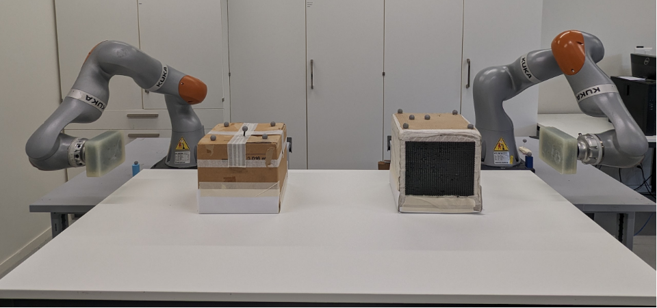
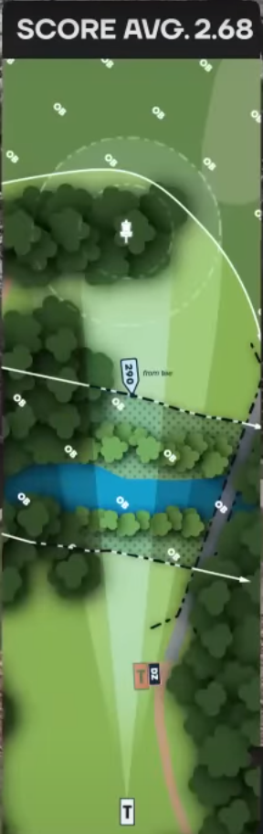
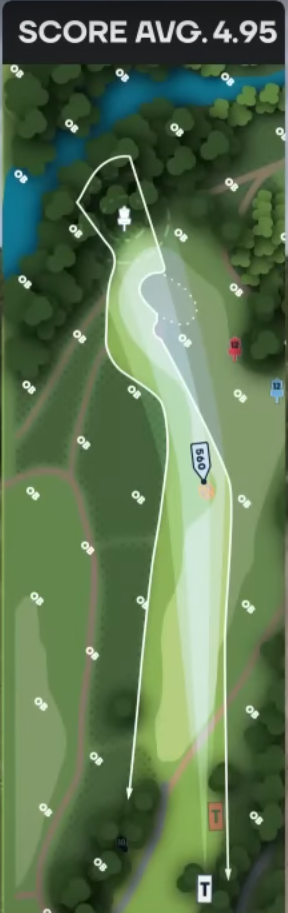

Learning Object Dynamics
Automated Air Hockey Inspired Dual Arm Hitting Framework
An automated, air-hockey-style dual-arm rig that collects impact data and learns a stochastic model to plan sequential, Golf-like hits.
Summary written from the paper abstract — the full PDF (RA-L 2025) isn't available yet. Add it as assets/paper.pdf and I'll expand this page with a download link.
The idea
Learning how an object moves after a hit needs a lot of consistent impact data — tedious and hard to gather by hand. This project automates it with a dual-arm setup that hits an object back and forth, like a collaborative game of air hockey, continuously generating labelled impact examples.
Method
- Automated data collection: two arms rally an object between them; a finite-state machine coordinates the exchange so hits are repeatable and self-resetting.
- Impact-aware Extended Kalman Filter: approximates the discontinuous impulse dynamics through a hitting-force model that balances the energies during collision, keeping the automation robust to impacts.
- Full density modeling: friction stochasticity and control error make the outcome uncertain, so the relationship between hitting impulse and the object's resulting displacement is modelled as a full probability distribution rather than a point estimate.
Application — the "Golf" principle
The learned motion model is used to plan sequential hits with two or more robots: much like sinking a long putt in several strokes, a chain of planned hits can drive an object to a location far beyond the reach of any single robot.
Gallery

Dual-arm experimental setup

Automation finite state machine

Reachable spaces of the arms

Sequential hitting — step 1

Sequential hitting — step 3

Sequential-hit optimisation